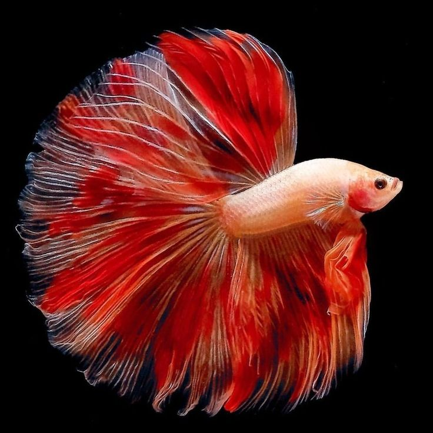
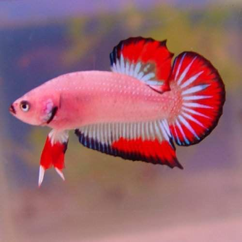
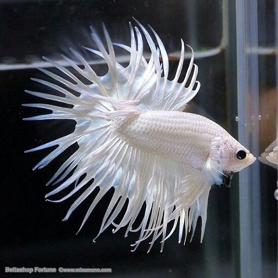
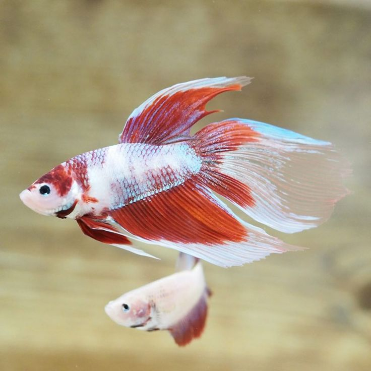

Ikan cupang adalah jenis ikan air tawar yang populer di kalangan penggemar ikan hias. Ikan ini berasal dari wilayah Asia Tenggara, terutama dari perairan rawa, sungai, dan sawah. Ikan cupang dikenal karena keindahan warna dan bentuk siripnya yang unik, serta sifat agresif pada sesama ikan jantan.
Warna ikan cupang sangat bervariasi, termasuk biru, merah, hijau, dan lainnya.
Ikan Cupang Halfmoon dikenal karena bentuk ekornya yang berbentuk setengah bulan. Mereka memiliki sirip yang sangat besar dan lebar ketika dikembangkan, menciptakan tampilan yang indah dan menarik.
Ikan Cupang Plakat memiliki bentuk tubuh yang lebih ramping dan sirip yang lebih pendek dibandingkan dengan beberapa varietas lainnya. Mereka cenderung lebih aktif dan agresif, sehingga sering dipilih untuk pertarungan cupang (Betta fighting).
Ciri khas ikan Cupang Crowntail adalah siripnya yang memiliki "rajutan" panjang dan berlekuk, memberikan tampilan seperti mahkota. Ini menciptakan efek visual yang menarik dan unik.
Ikan Cupang Veiltail memiliki sirip ekor yang panjang dan menggantung, menciptakan tampilan yang anggun. Sirip mereka biasanya lebih panjang daripada varietas lain, dan mereka dikenal karena keindahan siripnya yang memanjang.
Untuk informasi lebih lanjut tentang ikan cupang, kunjungi Wikipedia - Cupang.